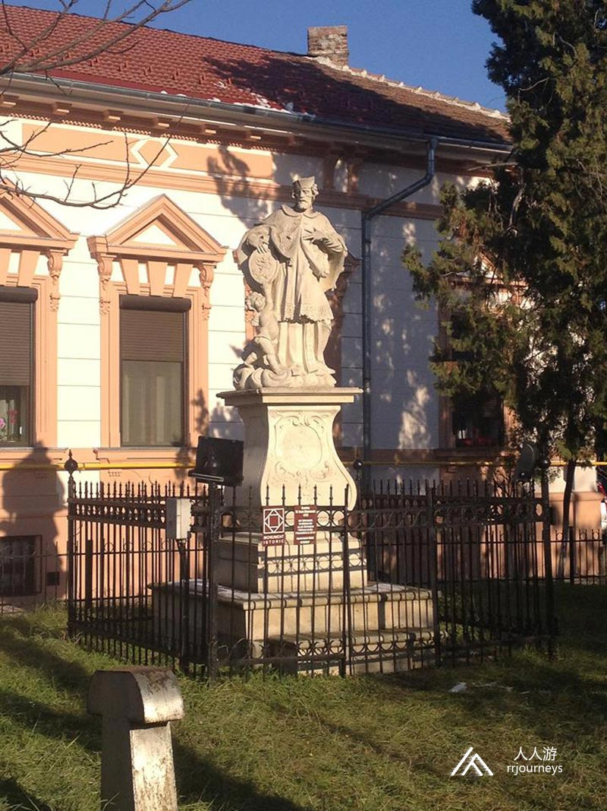
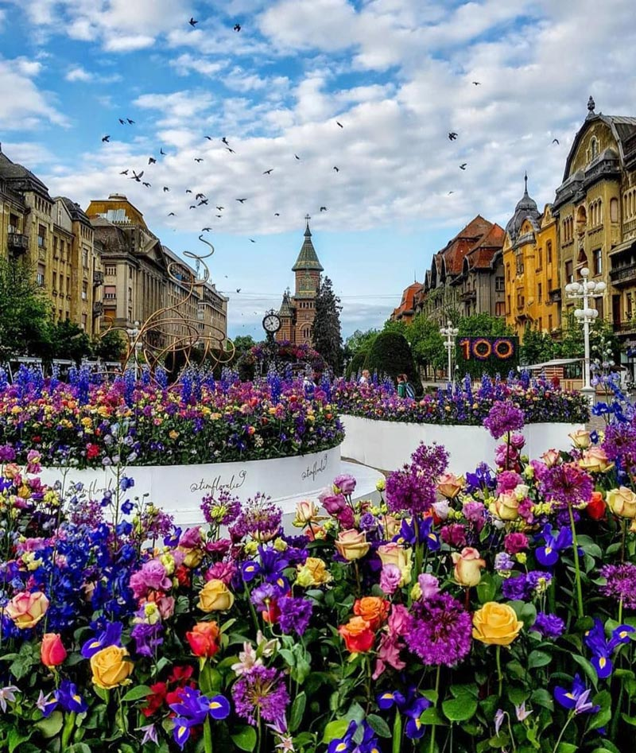
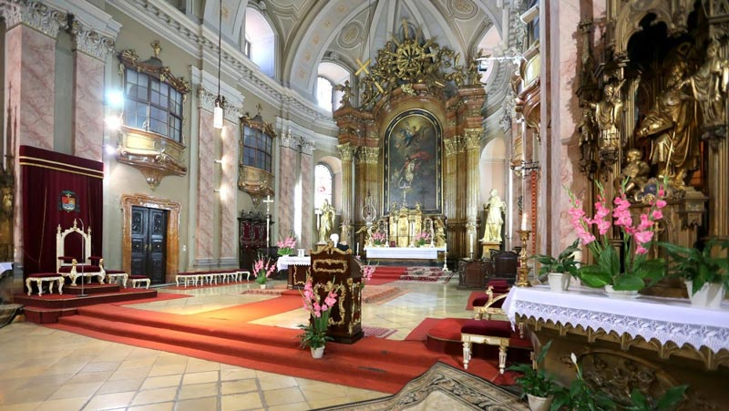
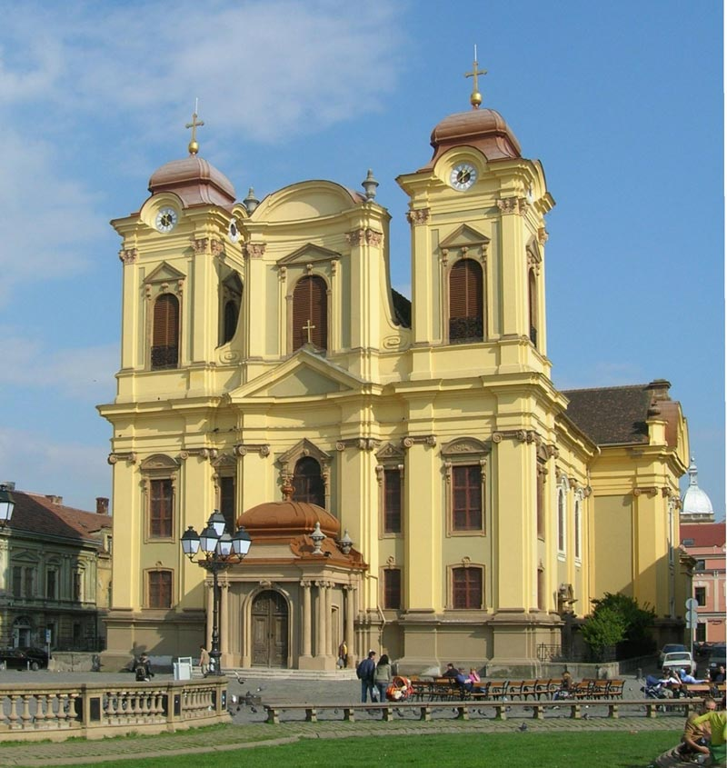
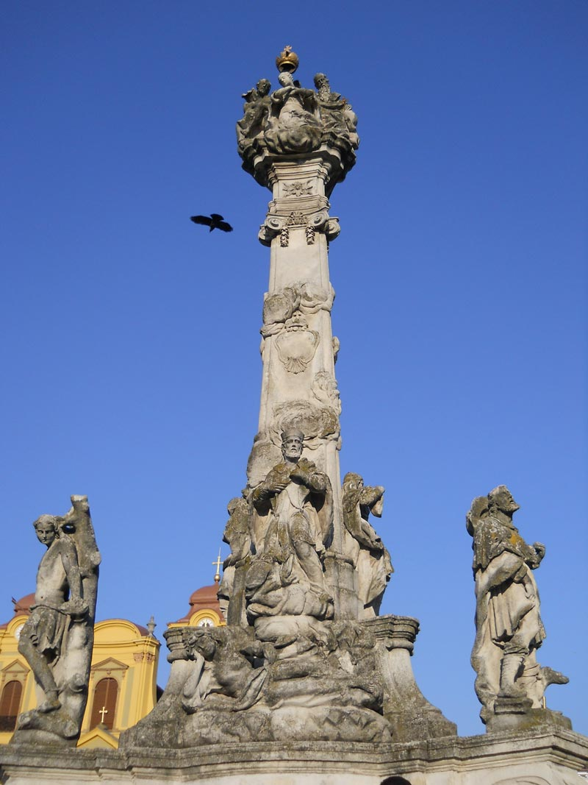
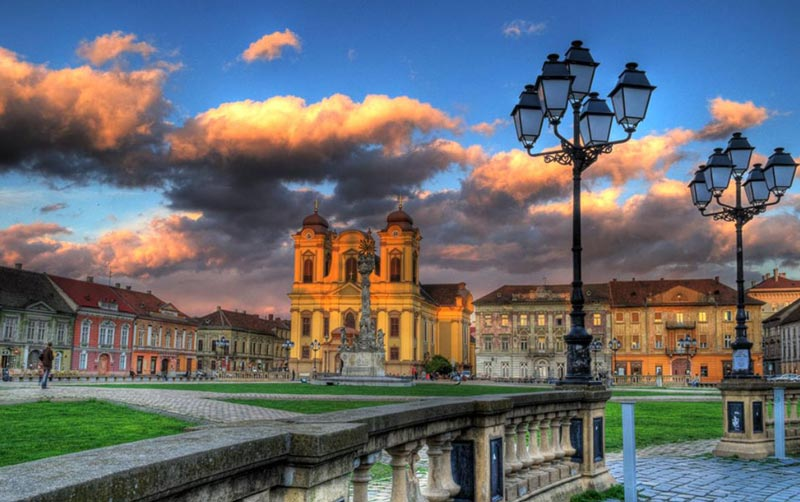
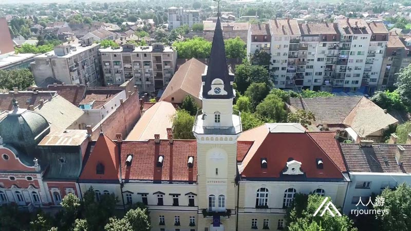
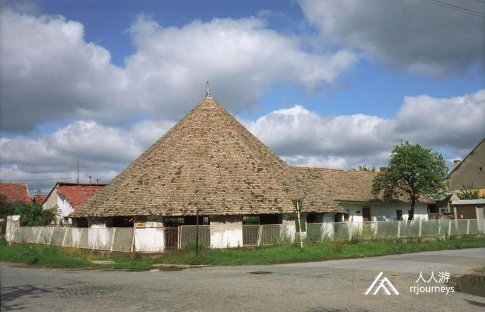
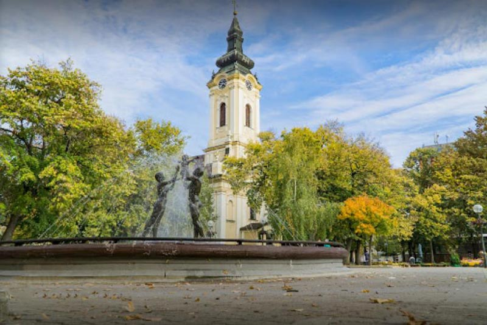

具体行程
DAY 1：布达佩斯—阿拉德
入住地点：阿拉德

DAY 2：阿拉德—泰梅什堡
入住地点：泰梅什堡
蒂米什瓦拉（泰梅什堡）
蒂米什瓦拉又称泰梅什堡，名字来自中世纪的蒂米什瓦拉河的名称，是罗马尼亚巴纳特的一个城市。 今天的蒂米什县的所在地。人口319,279，是罗马尼亚第三大人口稠密的城市。它位于多瑙河-克罗斯-马洛斯-蒂萨欧，大陆性的气候，但也可以感受到地中海的影响。蒂米什瓦拉，2021年的欧洲文化之都。由于城市的地理位置，它一直是历史上具有战略重要性的地方。
它的书面记载可以追溯到1266年，当时属于匈牙利王国。14世纪，匈牙利国王查尔斯•罗伯特因与领主的争战而搬到了这里，因此可以认为当时它是匈牙利的首都。它在16世纪被奥斯曼帝国占领，两个世纪后又重新成为匈牙利王国的一部分。1848-49年独立战争失败后，维也纳再次直接统治它。1920年，《特里亚农条约》它被罗马尼亚吞并。它历史上最重要的事件是1989年的罗马尼亚革命。 蒂米什瓦拉是一个具有多国文化的城市。除罗马尼亚人外，匈牙利人，德国人，塞族人，斯洛伐克人，乌克兰人和意大利人。由于其特别的建筑文化的丰富性，被称为“小维也纳”。 蒂米什瓦拉在18世纪成为主要的经济中心，21世纪的经济相对发展，其生活水平在罗马尼亚城市中排名第四。  景点：蒂米什瓦拉大教堂 蒂米什瓦拉大教堂又称圣乔治教堂大教堂，建于1736年- 1773年，是主教大教堂。它受到纪念碑的保护。 1738年，大教堂成为恰纳德教区的中心。主教大教堂最初是中世纪的圣乔治教堂。 今天的圆顶是由法院首席建筑师约瑟夫•伊曼纽尔•菲舍尔•冯•埃拉赫设计的。基石由主教贝拉•法尔肯斯坦于1736年铺设。第一次大规模弥撒发生在1754年。塔楼于1761年完工，1770年进行室内装饰; 施工于1773年完成。在1788年土耳其战争中，被用作武器库。1803年主教拉斯洛•科塞格对其进行了奉献。
 1849年夏天，蒂米什瓦拉被围困，许多人在大教堂的地下室里找到了避难所。 其历史上的第一次全面整修由欧盟共同出资，始于2019年，2020年7月完成。 祭坛是巴洛克风格，用大理石装饰画。维也纳雕塑家约瑟夫•雷斯勒制造了带离子柱的主坛和圣徒雕像。1754年，维也纳大师米开朗基罗•安特伯格（Michelangelo Unterberger）绘制了主祭坛的图像，描绘了屠龙者圣乔治。  景点：洛森奇广场 洛森奇广场现为尤尼利广场，被18世纪奥地利建造的巴洛克式建筑所包围。东侧是罗马天主教大教堂建于1736年至1773年之间，楼高低矮，以免在战争和围困期间阻挡旧城堡系统中的炮弹。 西侧的中间是塞尔维亚东正教大教堂的后殿，建于1745年，也是巴洛克风格。18世纪的蒂米什瓦拉，建筑风格必须统一为巴洛克风格。即使是东正教大教堂。教堂旁边是塞尔维亚东正教主教的宫殿，始建于18世纪。广场中间为圣三一雕像。在一场灾难性的瘟疫之后，于1740年建立。
 该广场是年轻人的热门聚会场所。当地人开设许多露台，还会在广场上播放户外流行音乐，摇滚或民间音乐。 洛森奇广场附近有几栋有趣的建筑。天主教主教皇宫在垂直于广场的一条街道中崛起，该建筑收藏着教堂的历史记录。前政府宫殿现是司法机构的领土和机构所在地，建于1855年，模仿文艺复兴时期的风格。距此不远的是19世纪末拆除的设防系统的最大残留物，玛丽亚•特蕾莎堡垒。  景点：费伦茨•约瑟夫剧院 蒂米什瓦拉在1875年移交了第一个石剧院，称为费伦茨•约瑟夫剧院。它在1920年被烧毁，并且在进行翻新时，其立面以新拜占庭风格进行了重建。如今，这里有三个独立的剧院：米哈伊•埃米内斯库国家剧院，盖尔盖•西基国家匈牙利剧院和德国国家剧院。后两个共享建筑物较小的礼堂。此外，蒂米什瓦拉还设有两个木偶剧院。
DAY 3：泰梅什堡—基金达
返回布达佩斯
基金达 基金达是北巴纳特地区的城市和行政中心。城市有38,065居民。该城市始建于18世纪。从1774年的一百年间里，基金达一直是哈利堡君主制的一个自治行政区县的所在地。1893年基金达被授予城市地位。该市于1918年成为塞尔维亚王国的一部分。基金达市位于拥有丰富的古老文化遗迹的地区。许多考古发现，证明了七千多年前就有人住在这里。1996年，在镇区的外缘发掘了保存完好的考古遗迹，里面保存着一百万年前的猛象。庞然大物已成为该镇的标志之一。这里的统治权首先属于匈牙利人，后来属于塞族当地统治者。  景点：苏瓦察马磨坊 苏瓦察马磨坊在基金达。它是整个欧洲中剩下的三个中的一个的马驱动的干燥厂。 马磨坊是19世纪伏伊伏丁那地区的特色。它建于1899年，于1945年停止工作。它位于镇的西部，占地面积为728平方米。它是一家利用马匹作动力的谷物磨粉机房。磨房使用一到五对马。一对马每小时可以磨碎100公斤的谷物。传統的小麦面包的味道极佳且品质高。除谷物外，工厂还将加工胡椒和肉桂。 它的主楼为多金字塔形，高为8.55米，这部分的直径约15米，屋顶结构是木制的，并用瓷砖覆盖。该建筑依靠14个低矮的砖块和3个粗短的砖柱。立柱之间，空间被木板条围起来。在南侧，不用栅栏，而是用木格架起门来将马匹引入建筑物。 1990年苏瓦察马磨坊被宣布为具有非凡重要性的文化丰碑。  景点：圣米歇尔教堂 圣米歇尔教堂是塞尔维亚的东正教，在省伏伊伏丁那的基金达市和北巴纳特地区。在塞尔维亚是极其重要的文化古迹，它建于1762年，采用古典风格建造。 
Romania: Europe’s Most Overlooked Holiday Destination
…That has it all
Romania is one of, if not the most overlooked of European holiday destinations. A quick scratch of the country’s surface reveals that it’s a place that has it all. From unspoilt wilderness to centuries-old castles, from picturesque ski slopes to quiet sandy beaches, from a burgeoning wine and craft beer scene to cities every bit as vibrant as their western counterparts.
Serbia: Undiscovered Treasure
Despite being a proud nation with an immense history and no small amount of political media coverage, Serbia remains relatively undiscovered in the tourist stakes. This is a genuine crime, as the country is full to the breaking point with vibrant cities, gorgeous nature and some of the best food on the continent.
时间
地点
景点（可以 +/- ）
入住地点
第一天
布达佩斯出发265公里
阿拉德
Arad
罗马尼亚
Water tower水塔, Parcul Copiilor, The Red Church红教堂, Parcul Pădurice, Museum Arad, Mures Floodplain Natural Park, Palace of Szantay, Parcul Reconcilierii, House Lockers, Palace of Cenad, Biserica Catolică „Sf. Anton de Padova”
第二天
59公里
泰梅什堡
Timisoara
蒂米什瓦拉正教会大教堂, Victoriei Square 广场, Roses Park 公园, Liberty's Square 自由广场, 千禧教堂, 匈雅提城堡, Wolf Statue
第三天
73公里
246公里到布达佩斯
基金达
Kikinda
塞尔维亚
Народни музеј Кикинда, Staro Jezero, TERRA museum, Vila Rizenfelder Kikinda, Vodice, Simicev Salas
-